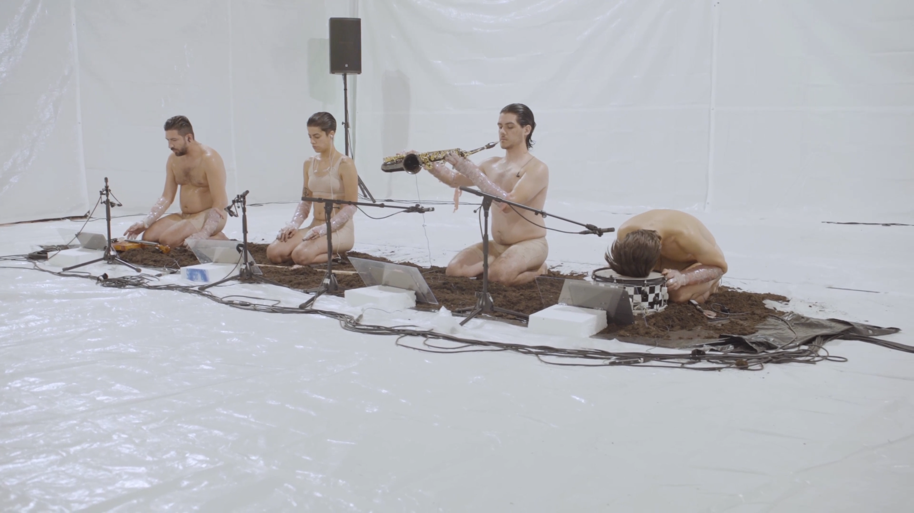
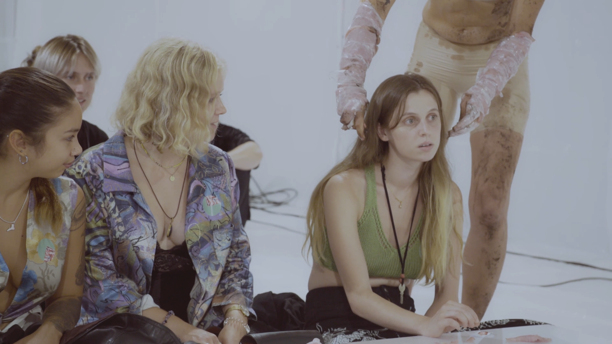
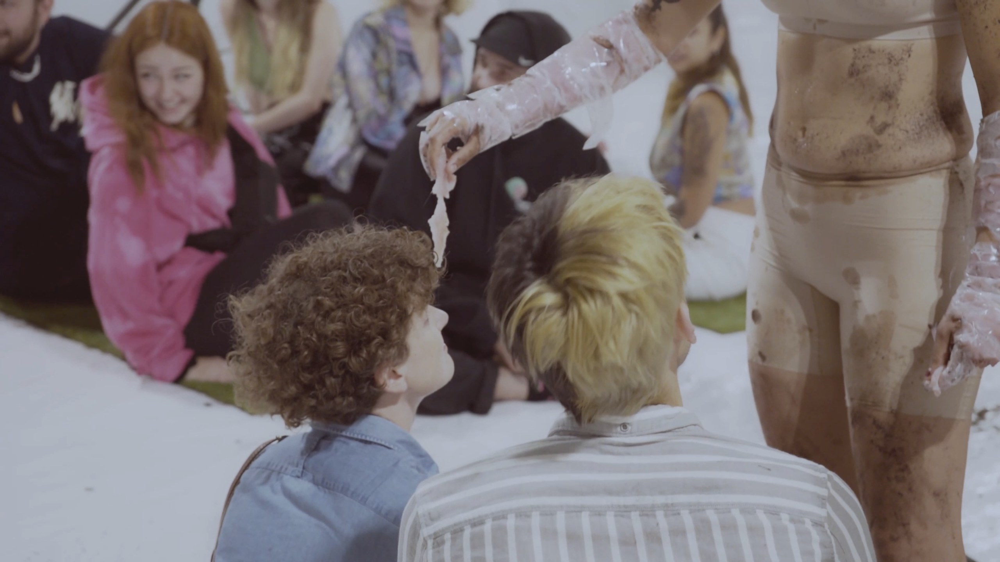

IT'S NICE 2 MEAT U
lies between performance and music, event and installation. It explores both the borders of musical experience as well as the border between performer and audience.



IT'S NICE 2 MEAT U
was was conceived for the ZeitRäume Basel festival in fall 2021, as a two-part site specific work for an industrial hall converted into a paddle-ball court. The court is transformed into an area of encounter, where one audience experiences the work directly while another sits outside, looking in through a small window.
The work is based on the concept of presence, whereby both musical and performance material are conceived to point back to the actual conditions of performance – the "here and now". The first part deals with presence in musical material, while the second part deals with the presence of the spectator, using interaction and reaction with/of the audience as material.
I have also written a text analysing this work, its position within an aesthetics of presence, and my view on the social object of music.